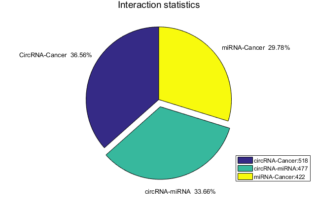
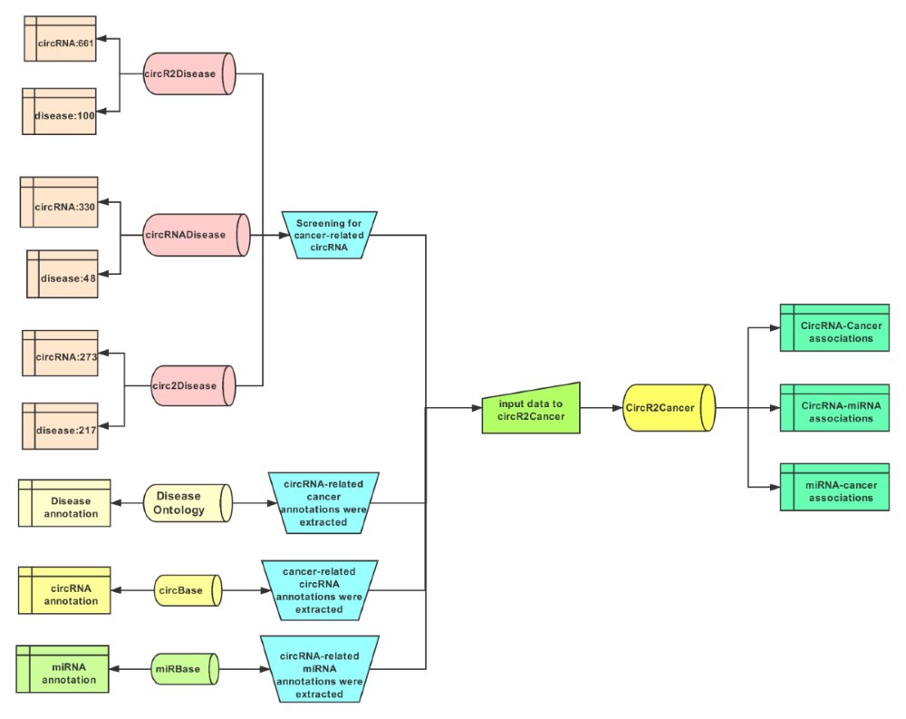

Accumulating biological experimental results have shown that circRNA plays important roles
in gene
transcription, post-transcription and translational regulation. Therefore, abnormal expression of
circRNA is associated with a group of cancers. Thus, it is of great importance to develop a high-quality
database that stores dysregulated circRNAs in cancers. The circR2Cancer is a manually curated database
that provides reliable associations between circRNAs and cancers. The current version of the
circR2Cancer, which extracts 518 associations between 457 circRNAs and 43cancers by extracting data from
human-related circRNAs and cancers in existing databases and literatures. In addition, this database
also includes 477 circRNA-miRNA interactions and 422 miRNA-cancer relationships. This database contains
cancers’ information from Disease Ontology database and basic biological information of circRNAs. At the
same time, we offer users a simple friendly interface, making it convenient to browse, search and
download new cancer-related circRNA. Moreover, the establishment of the circR2Cancer also provides
convenience for studying the mechanism of cancer-related circRNA.

